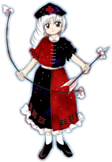

Eirin é frequentemente vista como:
Genial – possui uma mente brilhante e conhecimento médico incomparável.
Serena – mantém a calma e a postura equilibrada mesmo nas situações mais críticas.
Misteriosa – esconde segredos milenares sobre seu passado na Lua.
Ela transmite a sensação de uma figura maternal e sábia que está sempre dez passos à frente de qualquer um.
🧠 Inteligência inigualável
Eirin é amplamente conhecida por ser uma das mentes mais brilhantes de Gensokyo:
Cria medicamentos e elixires complexos
Analisa problemas com lógica impecável
Compreende ciências e magias ocultas avançadas
Sua capacidade dedutiva raramente falha em encontrar uma solução.
🎭 Comportamento maduro
Ela demonstra traços típicos de uma mentora experiente:
Gosta de ensinar e orientar
Trata seus pacientes com paciência e dedicação
Pode ser severa quando suas ordens médicas são desobedecidas
Seu jeito protetor faz parte fundamental de sua personalidade.
🌿 Vida na floresta
Eirin vive isolada na mansão Eientei:
Passa muito tempo no laboratório criando fórmulas
Interage e cuida dos coelhos terrestres e lunares
Protege os arredores da floresta de intrusos de forma discreta
Ela prefere a tranquilidade do Bambual dos Perdidos, onde pode focar em suas pesquisas.
🤝 Relação com os outros
Eirin interage de forma diplomática com os habitantes de Gensokyo:
Dedica sua lealdade absoluta à Princesa Kaguya
Supervisiona e orienta o trabalho de Reisen
Atende humanos e youkais que buscam tratamentos médicos
Apesar de seu passado enigmático, ela é bondosa e busca ajudar a comunidade.
Farmacêutica e Médica de Eientei
Eirin é uma especialista em medicina natural e lunar que vive no Bambual dos Perdidos, passando seus dias fabricando remédios e atendendo doentes.
Protetora e Conselheira Lunar
Além de sua profissão médica, Eirin atua como a mente estratégica por trás da segurança e das decisões da mansão Eientei.
Criação de remédios e elixires potentes
O principal poder de Eirin é a alquimia e a medicina avançada:
Pode curar enfermidades e ferimentos incuráveis
Desenvolve substâncias com efeitos mágicos diversos
Consegue manipular fórmulas capazes de alterar a longevidade
Esse conhecimento é especialmente vasto devido à sua origem divina e milenar.
Tiro de precisão com arco
Ela pode disparar flechas imbuídas de energia espiritual com precisão absoluta, afetando alvos a longas distâncias.
Voo
Como uma habitante celestial da Lua, Eirin pode voar livremente e se mover com graciosidade no campo de batalha.
Imortalidade e Longevidade
Por ter criado e consumido o Elixir de Hourai, Eirin possui uma existência eterna e uma resistência física absoluta contra a morte.
Mesmo mantendo uma postura discreta em sua clínica, sua inteligência divina e técnicas médicas fazem dela uma das figuras mais respeitadas de Gensokyo.

Espécie:Lunarian
Título:Cérebro da Lua (Brain of the Moon)